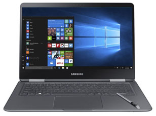

Ithaca Electronics
Welcome to Ithaca Electronics! We're so happy you're visiting out page today, and we hope to help you with whatever technology needs you have. Whether it's computers, phones, radios, drones, adapters, or anything else, we have everything you need at our store. Or, you can order some of our most popular products online through our website. Once again, thank you for supporting your local Ithaca business, and feel free to contact us if you have any questions!
Directions
On the night of the full moon, follow the cry of the wolf until you reach the Red Rock. Go north until you find three tall pine trees, then take Route 79 to 900 West State Street. Our store is the little brick building with the big yellow banner that says "Ithaca Electronics". Parking is around the back, or across the street if the back lot is full.
Hiring
We're hiring! If you are passionate about technology, or looking to learn, get in touch with us to have a chance at the opportunity of a lifetime. We offer flexible hours, good benefits, and an employee discount! Employees from Ithaca Electronics have gone on to found companies like Google, Facebook, and Microsoft, and can be found at high level executive positions at Twitter, Tesla, Lyft, and many other Silicon Valley powerhouses.